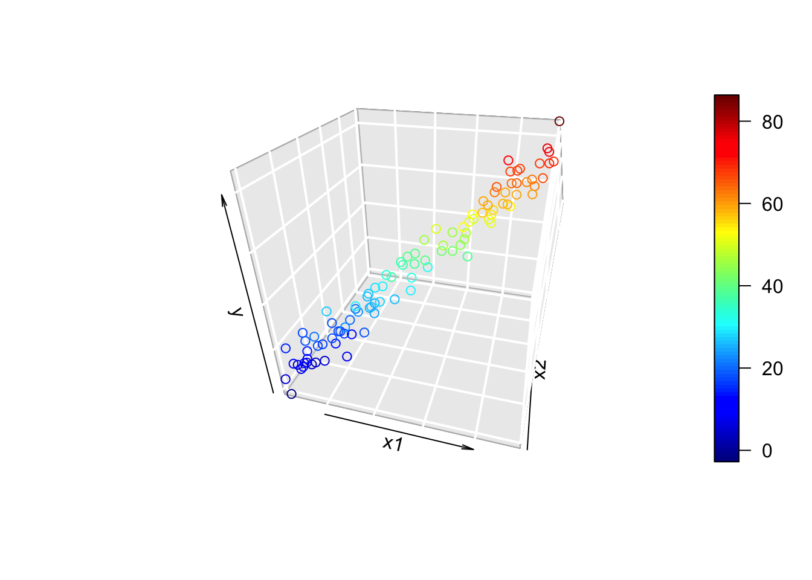
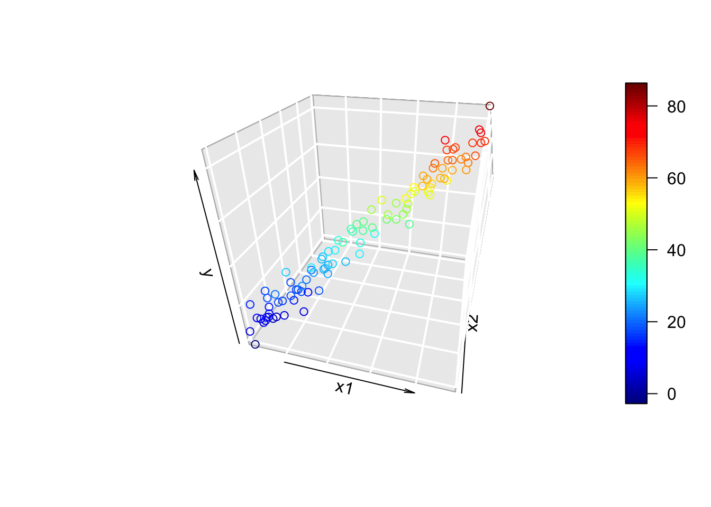
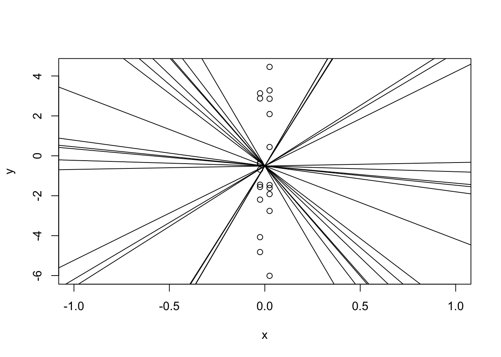
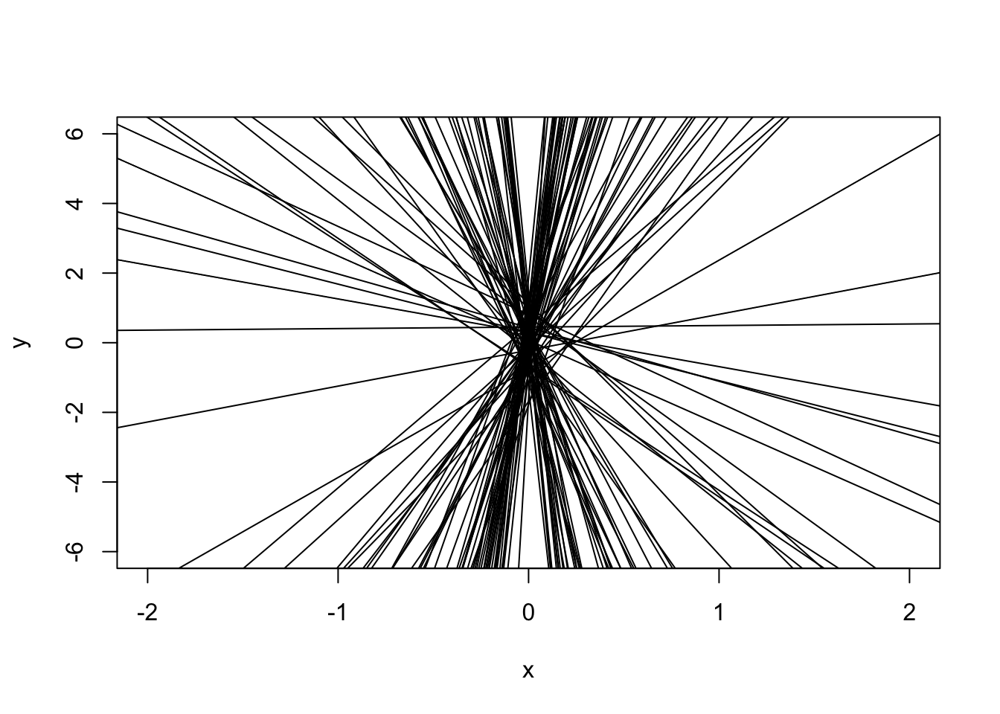

Show the code
library(plot3D)
n <- 100
x1 <- runif(n, 0, 10)
x2 <- 2 + x1 + runif(n, -1, 1)
y <- 0 + 4*x1 + 3*x2 + rnorm(n, 0, 5)
scatter3D(x1, x2, y, phi = 30, theta = 15, bty = "g",
xlab = "x1", ylab = "x2", zlab = "y")
Consider the model \[ y_i = \beta_0 + \beta_1x_{i1} + \beta_2x_{i2} + \epsilon_i \] with the added assumption that \(x_{i1} = a + bx_{i2} + z_i\), where \(z_i\) is some variation.
(As a technical note, none of this is assumed to be random; just uncertain. We’ll use the language of probability in this section, but it’s just to quantify uncertainty rather than make modelling assumptions.)
library(plot3D)
n <- 100
x1 <- runif(n, 0, 10)
x2 <- 2 + x1 + runif(n, -1, 1)
y <- 0 + 4*x1 + 3*x2 + rnorm(n, 0, 5)
scatter3D(x1, x2, y, phi = 30, theta = 15, bty = "g",
xlab = "x1", ylab = "x2", zlab = "y")
The 3D plot looks like a tube! By “tube”, we can think of the 3D plot as being a 2D plot that’s in the wrong coordinate system. In other words, the data define a single axis, which is different from the x1, x2, and y axes. When fitting multiple linear regression, we’re fitting a hyperplane. If the relationship is multicollinear, then we might imagine rotating a hyperplane around the axis defined by the “tube” in the plot above. Since any rotation of the plane around fits the line of data pretty well, the coefficients that define that plane are not well-estimated.
It’s hard to imagine 3D sets of points, so let’s do a 2D analogy. In the 3D example, we actually had a 2D relationship, so let’s consider a 2D example that’s almost 1D.
In the plot below, I’ve made \(x\) almost one-dimensional. That is, I’ve given it a vary small range. I intentionally changed the x limits of the plot to emphasize this.
x <- c(rep(-0.025, 10), rep(0.025, 10))
y <- x + rnorm(20, 0, 3)
plot(y ~ x, xlim = c(-2, 2))
If we were to fit a regression line to this, there are many many slopes that would make this work!
plot(y ~ x, xlim = c(-1, 1))
for(i in 1:20) abline(a = mean(y), b = runif(1, -20, 20))
All of the lines I added will fit the data pretty well, even though they all have completely different slopes! Yes, there’s one with a “best” slope, but slightly different data would have given us a very different slope:
# Set up empty plot
plot(NA, xlab = "x", ylab = "y",
xlim = c(-2, 2), ylim = c(-6,6))
# Generate data from same dgp as before
for(i in 1:100) {
y <- x + rnorm(20, 0, 3)
abline(lm(y ~ x))
}
All of these lines would have worked for our data!
This can easily be seen the variance of the parameters:
summary(lm(y ~ x))$coef Estimate Std. Error t value Pr(>|t|)
(Intercept) -0.6205096 0.6779798 -0.9152331 0.3721680
x 6.0310840 27.1191916 0.2223917 0.8265128In the example above, the line was very sensitive to a slight change in the data because we essentially had one dimension. If we actually had one dimension, then any line that cgoes through \(\bar y\) has the exact same error, regardless of the slope. We can see this in the design matrix: \(X\) has a column of 1s for the intercept (which is good), but also has a column for \(x_1\) that has zero variance. This means that it’s a linear combination of the first column, and thus is rank-deficient.
X <- cbind(rep(1, 20), rep(0, 20))
try(solve(t(X) %*% X))Error in solve.default(t(X) %*% X) :
Lapack routine dgesv: system is exactly singular: U[2,2] = 0Since one column is a linear combination of the other, \(X^TX\) cannot be inverted. In this case, the variance fo \(\hat\beta_1\) is infinite!
This can also happen if one column is “close” to being a linear combination of the others, such as:
# Change the first element in the second column to 10^-23
X[1, 2] <- 1e-23
try(solve(t(X) %*% X))Error in solve.default(t(X) %*% X) :
system is computationally singular: reciprocal condition number = 4.75e-48The rows are mathematically different, but the difference is so small that computers cannot tell.
x <- runif(20, 0, 1) / 1e7
X <- cbind(1, x)
try(solve(t(X) %*% X)) x
1.697904e-01 -2.406244e+06
x -2.406244e+06 4.833450e+13In the next code chunk, try playing around with the power of 10 (i.e., try 10^50, 10^-50, etc., for both positive and negative powers). At some point, the matrix is not invertible and the coefficient table stops reporting the slope! At the other end, the line is a near perfect fit (why?).
x <- runif(20, 0, 1) / (10^350)
y <- x + rnorm(20, 0, 3)
summary(lm(y ~ x))$coef Estimate Std. Error t value Pr(>|t|)
(Intercept) 0.1092976 0.6173655 0.1770387 0.8613516We can kinda detect multicollinearity mainly using the standard error of the estimates:
library(palmerpenguins)
peng_lm <- lm(body_mass_g ~ flipper_length_mm + bill_length_mm + bill_depth_mm,
data = penguins)
summary(peng_lm)
Call:
lm(formula = body_mass_g ~ flipper_length_mm + bill_length_mm +
bill_depth_mm, data = penguins)
Residuals:
Min 1Q Median 3Q Max
-1054.94 -290.33 -21.91 239.04 1276.64
Coefficients:
Estimate Std. Error t value Pr(>|t|)
(Intercept) -6424.765 561.469 -11.443 <2e-16 ***
flipper_length_mm 50.269 2.477 20.293 <2e-16 ***
bill_length_mm 4.162 5.329 0.781 0.435
bill_depth_mm 20.050 13.694 1.464 0.144
---
Signif. codes: 0 '***' 0.001 '**' 0.01 '*' 0.05 '.' 0.1 ' ' 1
Residual standard error: 393.4 on 338 degrees of freedom
(2 observations deleted due to missingness)
Multiple R-squared: 0.7615, Adjusted R-squared: 0.7594
F-statistic: 359.7 on 3 and 338 DF, p-value: < 2.2e-16It looks like bill_depth_mm has a large standard error! Of course, this might be because:
bill_depth_mm is high to begin with.bill_depth_mm will do.Multico. is just one of the possible reasons why the SE might be high, we need to look into it more to be sure.
library(car)
vif(peng_lm)flipper_length_mm bill_length_mm bill_depth_mm
2.673338 1.865090 1.611292 It actually has quite a small VIF!
X <- model.matrix(body_mass_g ~ flipper_length_mm + bill_length_mm + bill_depth_mm,
data = penguins)
Z <- cbind(1, apply(X[, -1], 2, scale))
print("correlation of X")[1] "correlation of X"round(cor(X), 4) (Intercept) flipper_length_mm bill_length_mm bill_depth_mm
(Intercept) 1 NA NA NA
flipper_length_mm NA 1.0000 0.6562 -0.5839
bill_length_mm NA 0.6562 1.0000 -0.2351
bill_depth_mm NA -0.5839 -0.2351 1.0000print("Also correlation of X")[1] "Also correlation of X"round(t(Z) %*% Z/ (nrow(Z) - 1), 4) flipper_length_mm bill_length_mm bill_depth_mm
1.0029 0.0000 0.0000 0.0000
flipper_length_mm 0.0000 1.0000 0.6562 -0.5839
bill_length_mm 0.0000 0.6562 1.0000 -0.2351
bill_depth_mm 0.0000 -0.5839 -0.2351 1.0000By simulation:
n <- 100
x1 <- runif(n, 0, 10)
x2 <- 2 + x1 + runif(n, -3, 3)
reps_1 <- replicate(1000, {
y <- 0 + 4*x1 + 3*x2 + rnorm(n, 0, 5)
coef(lm(y ~ x1 + x2))
}) |> t()
cor(reps_1) (Intercept) x1 x2
(Intercept) 1.0000000 0.1764180 -0.6112093
x1 0.1764180 1.0000000 -0.8609998
x2 -0.6112093 -0.8609998 1.0000000x1 <- scale(x1)
x2 <- scale(x2)
reps_2 <- replicate(1000, {
y <- 0 + 4*x1 + 3*x2 + rnorm(n, 0, 5)
coef(lm(y ~ x1 + x2))
}) |> t()
cor(reps_2) (Intercept) x1 x2
(Intercept) 1.00000000 -0.01364783 0.03646404
x1 -0.01364783 1.00000000 -0.85526575
x2 0.03646404 -0.85526575 1.00000000The correlation is… slightly lower? It’s much lower for the intercept, but it doesn’t make much of a difference for the correlation between the slopes. (It will generally be lower, and should be with a large enough number of simulations.)
Just for fun, here’s the VIF for these data. I’ve added a parameter x1_around_x2 to allow you to play around with the correlation of x1 and x2.
x2_around_x1 <- 3
x1 <- runif(n, 0, 10)
x2 <- 2 + x1 + runif(n, -x2_around_x1, x2_around_x1)
y <- 0 + 4*x1 + 3*x2 + rnorm(n, 0, 5)
vif(lm(y ~ x1 + x2)) x1 x2
4.494537 4.494537